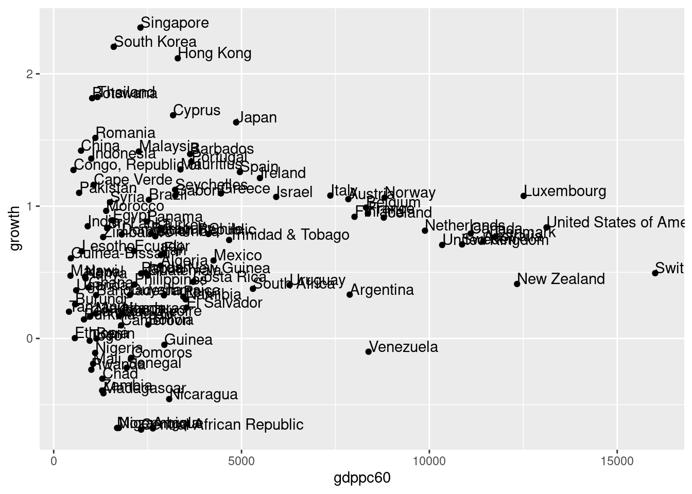
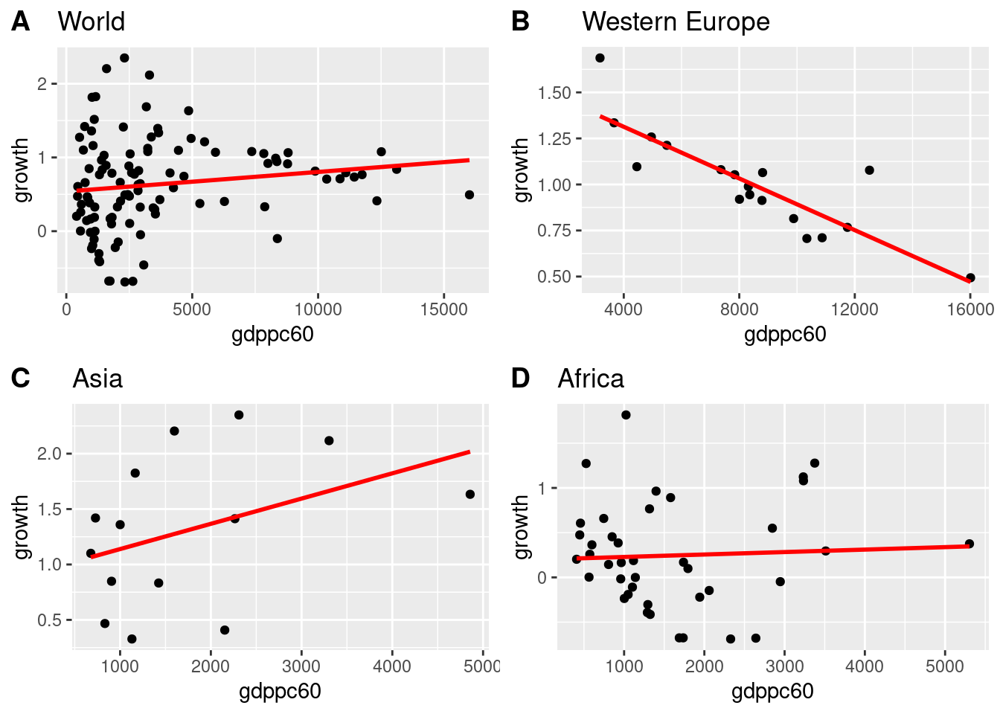

16 Script: convergence.R
# Convergence
# set working directory
# setwd("/home/sthu/Dropbox/hsf/github/courses/")
# clear the environment
rm(list = ls())
# some packages needed install.packages(...) and load packages library(...)
# Let us do the following:
# 1. check if a package is installed
# 2. if not installed the package should be installed and loaded
# 3. if installed the package should be loaded
# I like to do it with a function that is part of pacman package:
# load packages
if (!require(pacman)) install.packages("pacman")
pacman::p_load(haven, tidyverse, vtable, gtsummary, pastecs, Hmisc,
sjlabelled, tis, ggpubr, sjPlot, psych)
# an alternative is to install and load it like that
# install.packages(c("haven", "tidyverse", "vtable", "gtsummary", "pastecs"))
# library(c("haven", "tidyverse", "vtable", "gtsummary", "pastecs"))
# import data
data <- read_dta("https://github.com/hubchev/courses/raw/main/dta/convergence.dta")
# inspect data
names(data)## [1] "country" "gdppc60" "gdppc65" "gdppc70" "gdppc75" "gdppc80" "gdppc85" "gdppc90" "gdppc95" "africa" "asia" "weurope" "growth"## tibble [107 × 13] (S3: tbl_df/tbl/data.frame)
## $ country: chr [1:107] "Algeria" "Angola" "Argentina" "Australia" ...
## ..- attr(*, "format.stata")= chr "%24s"
## $ gdppc60: num [1:107] 2848 2642 7879 11436 7842 ...
## ..- attr(*, "label")= chr "real gdp per capita 1960"
## ..- attr(*, "format.stata")= chr "%9.0g"
## $ gdppc65: num [1:107] 3536 3072 8802 13192 9387 ...
## ..- attr(*, "label")= chr "real gdp per capita 1965"
## ..- attr(*, "format.stata")= chr "%9.0g"
## $ gdppc70: num [1:107] 3670 3558 9903 15842 11946 ...
## ..- attr(*, "label")= chr "real gdp per capita 1970"
## ..- attr(*, "format.stata")= chr "%9.0g"
## $ gdppc75: num [1:107] 3917 2230 10609 16716 14198 ...
## ..- attr(*, "label")= chr "real gdp per capita 1975"
## ..- attr(*, "format.stata")= chr "%9.0g"
## $ gdppc80: num [1:107] 5094 2059 11359 18300 16869 ...
## ..- attr(*, "label")= chr "real gdp per capita 1980"
## ..- attr(*, "format.stata")= chr "%9.0g"
## $ gdppc85: num [1:107] 5876 1988 9246 19669 17919 ...
## ..- attr(*, "label")= chr "real gdp per capita 1985"
## ..- attr(*, "format.stata")= chr "%9.0g"
## $ gdppc90: num [1:107] 5307 2081 7716 21446 21178 ...
## ..- attr(*, "label")= chr "real gdp per capita 1990"
## ..- attr(*, "format.stata")= chr "%9.0g"
## $ gdppc95: num [1:107] 4935 1339 10973 23827 22474 ...
## ..- attr(*, "label")= chr "real gdp per capita 1995"
## ..- attr(*, "format.stata")= chr "%9.0g"
## $ africa : num [1:107] 1 1 0 0 0 0 0 0 1 0 ...
## ..- attr(*, "label")= chr "=1 if in Africa"
## ..- attr(*, "format.stata")= chr "%8.0g"
## $ asia : num [1:107] 0 0 0 0 0 1 0 0 0 0 ...
## ..- attr(*, "label")= chr "=1 if in Asia"
## ..- attr(*, "format.stata")= chr "%8.0g"
## $ weurope: num [1:107] 0 0 0 0 0 0 0 1 0 0 ...
## ..- attr(*, "label")= chr "=1 if in Western Europe"
## ..- attr(*, "format.stata")= chr "%8.0g"
## $ growth : num [1:107] 0.55 -0.68 0.331 0.734 1.053 ...
## ..- attr(*, "format.stata")= chr "%9.0g"## # A tibble: 107 × 13
## country gdppc60 gdppc65 gdppc70 gdppc75 gdppc80 gdppc85 gdppc90 gdppc95 africa asia weurope growth
## <chr> <dbl> <dbl> <dbl> <dbl> <dbl> <dbl> <dbl> <dbl> <dbl> <dbl> <dbl> <dbl>
## 1 Algeria 2848. 3536. 3670. 3917. 5094. 5876. 5307. 4935. 1 0 0 0.550
## 2 Angola 2642. 3072. 3558. 2230. 2059. 1988. 2081. 1339. 1 0 0 -0.680
## 3 Argentina 7879. 8802. 9903. 10609. 11359. 9246. 7716. 10973. 0 0 0 0.331
## 4 Australia 11436. 13192. 15842. 16716. 18300. 19669. 21446. 23827. 0 0 0 0.734
## 5 Austria 7842. 9387. 11946. 14198. 16869. 17919. 21178. 22474. 0 0 0 1.05
## 6 Bangladesh 1130. 1164. 1181. 1030. 1040. 1245. 1366. 1568. 0 1 0 0.328
## 7 Barbados 3632. 4632. 6456. 8827. 10911. 11090. 14411. 14636. 0 0 0 1.39
## 8 Belgium 8314. 10454. 12980. 15024. 17451. 18109. 21246. 22356. 0 0 1 0.989
## 9 Benin 1140. 1188. 1170. 1048. 1069. 1252. 1069. 1139. 1 0 0 -0.000731
## 10 Bolivia 2516. 2880. 2670. 3124. 3264. 2718. 2615. 2795. 0 0 0 0.105
## # ℹ 97 more rows## # A tibble: 6 × 13
## country gdppc60 gdppc65 gdppc70 gdppc75 gdppc80 gdppc85 gdppc90 gdppc95 africa asia weurope growth
## <chr> <dbl> <dbl> <dbl> <dbl> <dbl> <dbl> <dbl> <dbl> <dbl> <dbl> <dbl> <dbl>
## 1 Algeria 2848. 3536. 3670. 3917. 5094. 5876. 5307. 4935. 1 0 0 0.550
## 2 Angola 2642. 3072. 3558. 2230. 2059. 1988. 2081. 1339. 1 0 0 -0.680
## 3 Argentina 7879. 8802. 9903. 10609. 11359. 9246. 7716. 10973. 0 0 0 0.331
## 4 Australia 11436. 13192. 15842. 16716. 18300. 19669. 21446. 23827. 0 0 0 0.734
## 5 Austria 7842. 9387. 11946. 14198. 16869. 17919. 21178. 22474. 0 0 0 1.05
## 6 Bangladesh 1130. 1164. 1181. 1030. 1040. 1245. 1366. 1568. 0 1 0 0.328## # A tibble: 6 × 13
## country gdppc60 gdppc65 gdppc70 gdppc75 gdppc80 gdppc85 gdppc90 gdppc95 africa asia weurope growth
## <chr> <dbl> <dbl> <dbl> <dbl> <dbl> <dbl> <dbl> <dbl> <dbl> <dbl> <dbl> <dbl>
## 1 United Kingdom 10341. 11633. 12917. 14072. 15302. 16878. 19585. 20963. 0 0 1 0.707
## 2 United States of America 13118. 15697. 17478. 19284. 22806. 25251. 28281. 30366. 0 0 0 0.839
## 3 Uruguay 6279. 5936. 6553. 6949. 8580. 6625. 7763. 9399. 0 0 0 0.403
## 4 Venezuela 8381. 10618. 11253. 8815. 8516. 7274. 7431. 7582. 0 0 0 -0.100
## 5 Zambia 1290. 1564. 1427. 1446. 1324. 1167. 1091. 870. 1 0 0 -0.393
## 6 Zimbabwe 1317. 1539. 2303. 2694. 2816. 2923. 3115. 2832. 1 0 0 0.766## country gdppc60 gdppc65 gdppc70 gdppc75 gdppc80 gdppc85
## Length:107 Min. : 407.8 Min. : 513.6 Min. : 354.5 Min. : 617.9 Min. : 473.6 Min. : 542.3
## Class :character 1st Qu.: 1153.2 1st Qu.: 1364.5 1st Qu.: 1488.0 1st Qu.: 1480.7 1st Qu.: 1708.6 1st Qu.: 1598.8
## Mode :character Median : 2484.7 Median : 2884.4 Median : 3072.2 Median : 3741.7 Median : 4306.2 Median : 4200.7
## Mean : 3634.3 Mean : 4367.5 Mean : 5128.4 Mean : 5759.1 Mean : 6553.6 Mean : 6900.3
## 3rd Qu.: 4354.0 3rd Qu.: 5873.3 3rd Qu.: 6994.6 3rd Qu.: 8355.8 3rd Qu.: 9968.6 3rd Qu.:10037.2
## Max. :16010.3 Max. :18928.9 Max. :22030.9 Max. :21808.9 Max. :23860.1 Max. :25251.4
## gdppc90 gdppc95 africa asia weurope growth
## Min. : 527.7 Min. : 499.3 Min. :0.0000 Min. :0.0000 Min. :0.0000 Min. :-0.6888
## 1st Qu.: 1829.0 1st Qu.: 1673.7 1st Qu.:0.0000 1st Qu.:0.0000 1st Qu.:0.0000 1st Qu.: 0.2458
## Median : 4034.0 Median : 4467.9 Median :0.0000 Median :0.0000 Median :0.0000 Median : 0.6587
## Mean : 7775.1 Mean : 8468.2 Mean :0.3738 Mean :0.1308 Mean :0.1402 Mean : 0.6345
## 3rd Qu.:11716.2 3rd Qu.:13627.8 3rd Qu.:1.0000 3rd Qu.:0.0000 3rd Qu.:0.0000 3rd Qu.: 1.0505
## Max. :28744.1 Max. :36741.1 Max. :1.0000 Max. :1.0000 Max. :1.0000 Max. : 2.3493## country gdppc60 gdppc65 gdppc70 gdppc75 gdppc80 gdppc85 gdppc90 gdppc95 africa
## nbr.val NA 1.070000e+02 1.070000e+02 1.070000e+02 1.070000e+02 1.070000e+02 1.070000e+02 1.070000e+02 1.070000e+02 107.00000000
## nbr.null NA 0.000000e+00 0.000000e+00 0.000000e+00 0.000000e+00 0.000000e+00 0.000000e+00 0.000000e+00 0.000000e+00 67.00000000
## nbr.na NA 0.000000e+00 0.000000e+00 0.000000e+00 0.000000e+00 0.000000e+00 0.000000e+00 0.000000e+00 0.000000e+00 0.00000000
## min NA 4.078180e+02 5.135667e+02 3.545075e+02 6.178639e+02 4.735793e+02 5.422725e+02 5.277151e+02 4.993415e+02 0.00000000
## max NA 1.601025e+04 1.892888e+04 2.203095e+04 2.180892e+04 2.386009e+04 2.525136e+04 2.874414e+04 3.674105e+04 1.00000000
## range NA 1.560243e+04 1.841531e+04 2.167644e+04 2.119105e+04 2.338651e+04 2.470909e+04 2.821642e+04 3.624171e+04 1.00000000
## sum NA 3.888715e+05 4.673224e+05 5.487424e+05 6.162241e+05 7.012400e+05 7.383373e+05 8.319308e+05 9.061030e+05 40.00000000
## median NA 2.484720e+03 2.884388e+03 3.072176e+03 3.741725e+03 4.306217e+03 4.200733e+03 4.034010e+03 4.467940e+03 0.00000000
## mean NA 3.634313e+03 4.367500e+03 5.128433e+03 5.759103e+03 6.553645e+03 6.900349e+03 7.775054e+03 8.468253e+03 0.37383178
## SE.mean NA 3.314566e+02 4.021934e+02 4.736475e+02 5.272377e+02 6.018749e+02 6.552251e+02 7.711596e+02 8.456513e+02 0.04699273
## CI.mean NA 6.571449e+02 7.973875e+02 9.390523e+02 1.045300e+03 1.193276e+03 1.299048e+03 1.528899e+03 1.676586e+03 0.09316766
## var NA 1.175539e+07 1.730827e+07 2.400459e+07 2.974381e+07 3.876112e+07 4.593724e+07 6.363152e+07 7.651850e+07 0.23628990
## std.dev NA 3.428613e+03 4.160321e+03 4.899448e+03 5.453789e+03 6.225843e+03 6.777701e+03 7.976937e+03 8.747486e+03 0.48609659
## coef.var NA 9.434006e-01 9.525635e-01 9.553499e-01 9.469857e-01 9.499817e-01 9.822259e-01 1.025965e+00 1.032974e+00 1.30030838
## asia weurope growth
## nbr.val 107.00000000 107.00000000 107.0000000
## nbr.null 93.00000000 92.00000000 0.0000000
## nbr.na 0.00000000 0.00000000 0.0000000
## min 0.00000000 0.00000000 -0.6887722
## max 1.00000000 1.00000000 2.3493433
## range 1.00000000 1.00000000 3.0381155
## sum 14.00000000 15.00000000 67.8899760
## median 0.00000000 0.00000000 0.6586871
## mean 0.13084112 0.14018692 0.6344858
## SE.mean 0.03275433 0.03372119 0.0601857
## CI.mean 0.06493865 0.06685553 0.1193240
## var 0.11479457 0.12167166 0.3875881
## std.dev 0.33881347 0.34881465 0.6225657
## coef.var 2.58950297 2.48821120 0.9812131## vars n mean sd median trimmed mad min max range skew kurtosis se
## country* 1 107 54.00 31.03 54.00 54.00 40.03 1.00 107.00 106.00 0.00 -1.23 3.00
## gdppc60 2 107 3634.31 3428.61 2484.72 3032.19 2027.76 407.82 16010.25 15602.43 1.53 1.55 331.46
## gdppc65 3 107 4367.50 4160.32 2884.39 3673.42 2579.50 513.57 18928.88 18415.31 1.41 1.16 402.19
## gdppc70 4 107 5128.43 4899.45 3072.18 4370.29 2854.11 354.51 22030.95 21676.44 1.29 0.74 473.65
## gdppc75 5 107 5759.10 5453.79 3741.72 4977.54 3708.25 617.86 21808.92 21191.05 1.15 0.09 527.24
## gdppc80 6 107 6553.64 6225.84 4306.22 5707.40 4476.29 473.58 23860.09 23386.51 1.07 -0.11 601.87
## gdppc85 7 107 6900.35 6777.70 4200.73 5929.46 4382.44 542.27 25251.36 24709.09 1.14 0.01 655.23
## gdppc90 8 107 7775.05 7976.94 4034.01 6660.00 4258.37 527.72 28744.14 28216.42 1.13 -0.10 771.16
## gdppc95 9 107 8468.25 8747.49 4467.94 7235.12 4935.09 499.34 36741.05 36241.71 1.14 0.12 845.65
## africa 10 107 0.37 0.49 0.00 0.34 0.00 0.00 1.00 1.00 0.51 -1.75 0.05
## asia 11 107 0.13 0.34 0.00 0.05 0.00 0.00 1.00 1.00 2.16 2.69 0.03
## weurope 12 107 0.14 0.35 0.00 0.06 0.00 0.00 1.00 1.00 2.04 2.20 0.03
## growth 13 107 0.63 0.62 0.66 0.63 0.59 -0.69 2.35 3.04 0.15 0.07 0.06| Characteristic | N = 1071 |
|---|---|
| country | |
| Algeria | 1 (0.9%) |
| Angola | 1 (0.9%) |
| Argentina | 1 (0.9%) |
| Australia | 1 (0.9%) |
| Austria | 1 (0.9%) |
| Bangladesh | 1 (0.9%) |
| Barbados | 1 (0.9%) |
| Belgium | 1 (0.9%) |
| Benin | 1 (0.9%) |
| Bolivia | 1 (0.9%) |
| Botswana | 1 (0.9%) |
| Brazil | 1 (0.9%) |
| Burkina Faso | 1 (0.9%) |
| Burundi | 1 (0.9%) |
| Cameroon | 1 (0.9%) |
| Canada | 1 (0.9%) |
| Cape Verde | 1 (0.9%) |
| Central African Republic | 1 (0.9%) |
| Chad | 1 (0.9%) |
| Chile | 1 (0.9%) |
| China | 1 (0.9%) |
| Colombia | 1 (0.9%) |
| Comoros | 1 (0.9%) |
| Congo, Republic of | 1 (0.9%) |
| Costa Rica | 1 (0.9%) |
| Cote d'lvoire | 1 (0.9%) |
| Cyprus | 1 (0.9%) |
| Denmark | 1 (0.9%) |
| Dominican Republic | 1 (0.9%) |
| Ecuador | 1 (0.9%) |
| Egypt | 1 (0.9%) |
| El Salvador | 1 (0.9%) |
| Ethiopia | 1 (0.9%) |
| Fiji | 1 (0.9%) |
| Finland | 1 (0.9%) |
| France | 1 (0.9%) |
| Gabon | 1 (0.9%) |
| Gambia, The | 1 (0.9%) |
| Ghana | 1 (0.9%) |
| Greece | 1 (0.9%) |
| Guatemala | 1 (0.9%) |
| Guinea | 1 (0.9%) |
| Guinea-Bissau | 1 (0.9%) |
| Guyana | 1 (0.9%) |
| Honduras | 1 (0.9%) |
| Hong Kong | 1 (0.9%) |
| Iceland | 1 (0.9%) |
| India | 1 (0.9%) |
| Indonesia | 1 (0.9%) |
| Iran | 1 (0.9%) |
| Ireland | 1 (0.9%) |
| Israel | 1 (0.9%) |
| Italy | 1 (0.9%) |
| Jamaica | 1 (0.9%) |
| Japan | 1 (0.9%) |
| Jordan | 1 (0.9%) |
| Kenya | 1 (0.9%) |
| Lesotho | 1 (0.9%) |
| Luxembourg | 1 (0.9%) |
| Madagascar | 1 (0.9%) |
| Malawi | 1 (0.9%) |
| Malaysia | 1 (0.9%) |
| Mali | 1 (0.9%) |
| Mauritania | 1 (0.9%) |
| Mauritius | 1 (0.9%) |
| Mexico | 1 (0.9%) |
| Morocco | 1 (0.9%) |
| Mozambique | 1 (0.9%) |
| Namibia | 1 (0.9%) |
| Nepal | 1 (0.9%) |
| Netherlands | 1 (0.9%) |
| New Zealand | 1 (0.9%) |
| Nicaragua | 1 (0.9%) |
| Niger | 1 (0.9%) |
| Nigeria | 1 (0.9%) |
| Norway | 1 (0.9%) |
| Pakistan | 1 (0.9%) |
| Panama | 1 (0.9%) |
| Papua New Guinea | 1 (0.9%) |
| Paraguay | 1 (0.9%) |
| Peru | 1 (0.9%) |
| Philippines | 1 (0.9%) |
| Portugal | 1 (0.9%) |
| Romania | 1 (0.9%) |
| Rwanda | 1 (0.9%) |
| Senegal | 1 (0.9%) |
| Seychelles | 1 (0.9%) |
| Singapore | 1 (0.9%) |
| South Africa | 1 (0.9%) |
| South Korea | 1 (0.9%) |
| Spain | 1 (0.9%) |
| Sri Lanka | 1 (0.9%) |
| Sweden | 1 (0.9%) |
| Switzerland | 1 (0.9%) |
| Syria | 1 (0.9%) |
| Tanzania | 1 (0.9%) |
| Thailand | 1 (0.9%) |
| Togo | 1 (0.9%) |
| Trinidad & Tobago | 1 (0.9%) |
| Turkey | 1 (0.9%) |
| Uganda | 1 (0.9%) |
| United Kingdom | 1 (0.9%) |
| United States of America | 1 (0.9%) |
| Uruguay | 1 (0.9%) |
| Venezuela | 1 (0.9%) |
| Zambia | 1 (0.9%) |
| Zimbabwe | 1 (0.9%) |
| real gdp per capita 1960 | 2,485 (1,153, 4,354) |
| real gdp per capita 1965 | 2,884 (1,365, 5,873) |
| real gdp per capita 1970 | 3,072 (1,488, 6,995) |
| real gdp per capita 1975 | 3,742 (1,481, 8,356) |
| real gdp per capita 1980 | 4,306 (1,709, 9,969) |
| real gdp per capita 1985 | 4,201 (1,599, 10,037) |
| real gdp per capita 1990 | 4,034 (1,829, 11,716) |
| real gdp per capita 1995 | 4,468 (1,674, 13,628) |
| =1 if in Africa | 40 (37%) |
| =1 if in Asia | 14 (13%) |
| =1 if in Western Europe | 15 (14%) |
| growth | 0.66 (0.25, 1.05) |
| 1 n (%); Median (IQR) | |
# check the assignments of countries to continents
data %>%
select(country, africa, asia, weurope) %>%
view()
data <- mutate(data, x_1 = africa + asia + weurope)
data %>%
filter(x_1==0) %>%
select(africa, asia, weurope, country) %>%
view()
# correct the assignment manually
data$weurope[data$country == "Austria"] <- 1
data$weurope[data$country == "Greece"] <- 1
data$weurope[data$country == "Cyprus"] <- 1
filter(data, data$weurope==1) # check changes## # A tibble: 18 × 14
## country gdppc60 gdppc65 gdppc70 gdppc75 gdppc80 gdppc85 gdppc90 gdppc95 africa asia weurope growth x_1
## <chr> <dbl> <dbl> <dbl> <dbl> <dbl> <dbl> <dbl> <dbl> <dbl> <dbl> <dbl> <dbl> <dbl>
## 1 Austria 7842. 9387. 11946. 14198. 16869. 17919. 21178. 22474. 0 0 1 1.05 0
## 2 Belgium 8314. 10454. 12980. 15024. 17451. 18109. 21246. 22356. 0 0 1 0.989 1
## 3 Cyprus 3178. 4261. 5638. 4827. 8302. 10228. 13798. 17169. 0 0 1 1.69 0
## 4 Denmark 11745. 14749. 17143. 17750. 19558. 21596. 23308. 25293. 0 0 1 0.767 1
## 5 Finland 8007. 9851. 12198. 14884. 16621. 18585. 21667. 20084. 0 0 1 0.920 1
## 6 France 8364. 10497. 13186. 14951. 17335. 18429. 21403. 21502. 0 0 1 0.944 1
## 7 Greece 4454. 6549. 9022. 11121. 12672. 12287. 12794. 13332. 0 0 1 1.10 0
## 8 Iceland 8786. 11403. 11678. 15235. 19440. 20414. 22502. 21901. 0 0 1 0.913 1
## 9 Ireland 5490. 6413. 7760. 9064. 10649. 11641. 15133. 18456. 0 0 1 1.21 1
## 10 Italy 7364. 9097. 12072. 13386. 16286. 17518. 20638. 21691. 0 0 1 1.08 1
## 11 Luxembourg 12510. 14019. 16163. 17384. 19089. 21414. 28744. 36741. 0 0 1 1.08 1
## 12 Netherlands 9883. 11702. 14237. 15803. 17339. 17974. 20823. 22320. 0 0 1 0.815 1
## 13 Norway 8808. 10478. 11959. 14873. 17977. 20630. 21855. 25538. 0 0 1 1.06 1
## 14 Portugal 3665. 4866. 6730. 7951. 9667. 9847. 13155. 13924. 0 0 1 1.33 1
## 15 Spain 4956. 7459. 9701. 11970. 12294. 12583. 15475. 17434. 0 0 1 1.26 1
## 16 Sweden 10870. 13552. 15850. 17588. 18348. 20001. 22219. 22122. 0 0 1 0.711 1
## 17 Switzerland 16010. 18929. 22031. 21809. 23860. 24844. 27931. 26227. 0 0 1 0.494 1
## 18 United Kingdom 10341. 11633. 12917. 14072. 15302. 16878. 19585. 20963. 0 0 1 0.707 1# In the following, I do the same with a loop
# c_europe <- c("Austria","Greece","Cyprus")
# sum(data$weurope) # check changes
# for (i in c_europe){
# print(i)
# data$weurope[data$country == i] <- 1
# }
# sum(data$weurope) # check changes
# data$weurope[data$country == "Austria"] # check changes
# create a category for the remaining countries
# use ifelse -- ifelse(condition, result if TRUE, result if FALSE)
data$rest <- ifelse(data$africa == 0 & data$asia == 0 & data$weurope == 0, 1, 0)
data$rest <- set_label(data$rest, label = "=1 if not in Africa, W.Europe, or Asia")
# create table with means across country groups
table_gdp <- data %>%
group_by(africa, asia, weurope) %>%
summarise_at(vars(gdppc60:gdppc95), list(name = mean))
data %>%
group_by(africa, asia, weurope) %>%
select(gdppc60:gdppc95) %>%
summarise_all(mean)## Adding missing grouping variables: `africa`, `asia`, `weurope`## # A tibble: 4 × 11
## # Groups: africa, asia [3]
## africa asia weurope gdppc60 gdppc65 gdppc70 gdppc75 gdppc80 gdppc85 gdppc90 gdppc95
## <dbl> <dbl> <dbl> <dbl> <dbl> <dbl> <dbl> <dbl> <dbl> <dbl> <dbl>
## 1 0 0 0 4288. 5034. 5727. 6411. 7042. 7185. 7457. 8212.
## 2 0 0 1 8366. 10294. 12401. 13994. 16059. 17272. 20192. 21640.
## 3 0 1 0 1739. 2247. 3090. 3760. 4905. 5761. 7501. 9143.
## 4 1 0 0 1596. 1860. 2046. 2182. 2426. 2382. 2562. 2528.# create growth rate
data$gr1 <- (data$gdppc95 - data$gdppc60)/data$gdppc60
data$gr2 <- log(data$gdppc95) - log(data$gdppc60)
cor(data$gr1, data$gr2)## [1] 0.9008887ggplot(data, aes(x = gdppc60, y = growth, label=country)) +
geom_point() +
geom_text(hjust=0, vjust=0) 
p1 <- ggplot(data, aes(x = gdppc60, y = growth, label=country )) +
geom_point() +
stat_smooth(formula=y~x, method="lm", se=FALSE, colour="red", linetype=1) +
# geom_text(hjust=0, vjust=0) +
ggtitle("World")
p2 <- data %>%
filter(weurope==1) %>%
ggplot( aes(x = gdppc60, y = growth, label=country )) +
geom_point() +
stat_smooth(formula=y~x, method="lm", se=FALSE, colour="red", linetype=1) +
#geom_text(hjust=0, vjust=0) +
ggtitle("Western Europe")
p3 <- data %>%
filter(asia==1) %>%
ggplot( aes(x = gdppc60, y = growth, label=country )) +
geom_point() +
stat_smooth(formula=y~x, method="lm", se=FALSE, colour="red", linetype=1) +
# geom_text(hjust=0, vjust=0) +
ggtitle("Asia")
p4 <- data %>%
filter(africa==1) %>%
ggplot( aes(x = gdppc60, y = growth, label=country )) +
geom_point() +
stat_smooth(formula=y~x, method="lm", se=FALSE, colour="red", linetype=1) +
# geom_text( hjust=0, vjust=0) +
ggtitle("Africa")
ggarrange(p1, p2, p3, p4 ,
labels = c("A", "B", "C", "D"),
ncol = 2, nrow = 2)## Warning: The following aesthetics were dropped during statistical transformation: label
## ℹ This can happen when ggplot fails to infer the correct grouping structure in the data.
## ℹ Did you forget to specify a `group` aesthetic or to convert a numerical variable into a factor?
## The following aesthetics were dropped during statistical transformation: label
## ℹ This can happen when ggplot fails to infer the correct grouping structure in the data.
## ℹ Did you forget to specify a `group` aesthetic or to convert a numerical variable into a factor?
## The following aesthetics were dropped during statistical transformation: label
## ℹ This can happen when ggplot fails to infer the correct grouping structure in the data.
## ℹ Did you forget to specify a `group` aesthetic or to convert a numerical variable into a factor?
## The following aesthetics were dropped during statistical transformation: label
## ℹ This can happen when ggplot fails to infer the correct grouping structure in the data.
## ℹ Did you forget to specify a `group` aesthetic or to convert a numerical variable into a factor?
# Regression analysis
m1 <- lm(growth ~ gdppc60, data = data)
m2 <- lm(growth ~ gdppc60, data = subset(data, weurope==1))
m3 <- lm(growth ~ gdppc60, data = subset(data, asia==1))
m4 <- lm(growth ~ gdppc60, data = subset(data, africa==1))
tab_model(m1, m2, m3, m4,
p.style = "stars",
p.threshold = c(0.2, 0.1, 0.05),
show.ci = FALSE,
show.se = FALSE,
show.aic = TRUE,
dv.labels = c("World", "W.Europe", "Asia", "Africa")) | World | W.Europe | Asia | Africa | |
|---|---|---|---|---|
| Predictors | Estimates | Estimates | Estimates | Estimates |
| (Intercept) | 0.54 *** | 1.59 *** | 0.91 *** | 0.20 |
| real gdp per capita 1960 | 0.00 * | -0.00 *** | 0.00 * | 0.00 |
| Observations | 107 | 18 | 14 | 40 |
| R2 / R2 adjusted | 0.021 / 0.012 | 0.727 / 0.710 | 0.158 / 0.088 | 0.002 / -0.024 |
| AIC | 204.917 | -14.237 | 31.220 | 76.318 |
|
||||
# reshape data (see: https://stackoverflow.com/questions/2185252/reshaping-data-frame-from-wide-to-long-format)
data_long <- gather(data, condition, measurement, gdppc60:gdppc95, factor_key=TRUE)## Warning: attributes are not identical across measure variables; they will be droppeddata_long$year <- as.numeric(substr(data_long$condition, 6, 7))
data_long$gr_long <- data_long %>%
select(country,measurement) %>%
group_by(country) %>%
mutate(gr = c(NA,diff(measurement))/lag(measurement, 1))
# erase all helping variables
data <- select(data, -starts_with("h_"))
# generate and remove variables in a dataframe
data <- mutate(data, Land = country)
data <- select(data, -country)
data %>%
summarise(
y65 = mean(gdppc65, na.rm = TRUE),
y70 = mean(gdppc70, na.rm = TRUE),
y75 = mean(gdppc75, na.rm = TRUE),
y80 = mean(gdppc80, na.rm = TRUE),
y85 = mean(gdppc85, na.rm = TRUE),
y90 = mean(gdppc90, na.rm = TRUE),
y95 = mean(gdppc95, na.rm = TRUE)
)## # A tibble: 1 × 7
## y65 y70 y75 y80 y85 y90 y95
## <dbl> <dbl> <dbl> <dbl> <dbl> <dbl> <dbl>
## 1 4367. 5128. 5759. 6554. 6900. 7775. 8468.pacman::p_unload(haven, tidyverse, vtable, gtsummary, pastecs, Hmisc,
sjlabelled, tis, ggpubr, sjPlot)## The following packages have been unloaded:
## haven, tidyverse, vtable, gtsummary, pastecs, Hmisc, sjlabelled, tis, ggpubr, sjPlot